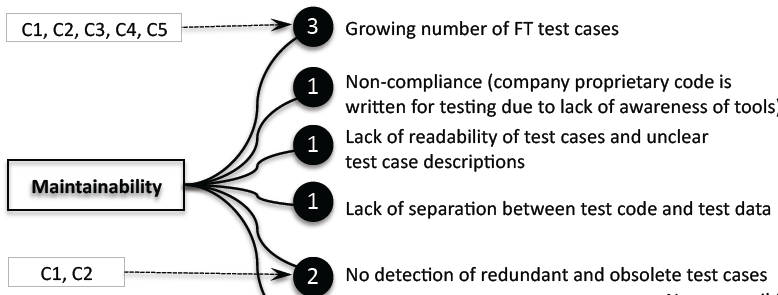

What's in this paper?
- Challenges of Systems of systems (SoS) testing are identified under topics of 1) fault slippage, 2) test turn-around time, and 3) test maintainability (see figure for example of 3).
- Solutions proposals are given under four classes of 1) developer quality assurance, 2) function test, 3) testing in all levels, and 4) requirements engineering and communication.
- Data is collected with interviews, documentation and fault slippage.
- Dilemma should companies improve areas that are already strong but still benefit from improvement or focus on the truly weak areas
Abstract
Context: Systems of systems (SoS) are highly complex and are integrated on multiple levels (unit, component, system, system of systems). Many of the characteristics of SoS (such as operational and managerial independence, integration of system into system of systems, SoS comprised of complex systems) make their development and testing challenging.
Contribution: This paper provides an understanding of SoS testing in large-scale industry settings with respect to challenges and how to address them.
Method: The research method used is case study research. As data collection methods we used interviews, documentation, and fault slippage data.
Results: We identified challenges related to SoS with respect to fault slippage, test turn-around time, and test maintainability. We also classified the testing challenges to general testing challenges, challenges amplified by SoS, and challenges that are SoS specific. Interestingly, the interviewees agreed on the challenges, even though we sampled them with diversity in mind, which meant that the number of interviews conducted was sufficient to answer our research questions. We also identified solution proposals to the challenges that were categorized under four classes of developer quality assurance, function test, testing in all levels, and requirements engineering and communication.
Conclusion: We conclude that although over half of the challenges we identified can be categorized as general testing challenges still SoS systems have their unique and amplified challenges stemming from SoS characteristics. Furthermore, it was found that interviews and fault slippage data indicated that different areas in the software process should be improved, which indicates that using only one of these methods would have led to an incomplete picture of the challenges in the case company.
Ref
Ali N. B. , Petersen K. and Mäntylä M. V., “Testing Highly Complex System of Systems: An Industrial Case Study” in Proceedings of the 6th International Symposium on Empirical Software Engineering and Measurement (ESEM), pp. 211-220, 2012, Lund , Sweden,
{kind=link}